Learning Objectives
After completing this unit, you’ll be able to:
- Use the VertexCreator to create point geometry from coordinate attributes.
- Use Data Preview to identify when features do not have a coordinate system set.
- Use the Coordinate System parameter in a transformer to set a coordinate system on features.
Instructions
In this lesson, you will:
- Scroll down to read the text below.
- Complete the exercise by following the steps.
- Complete the Quiz toward the bottom of the page.
- Optional: Let us know if you found this lesson relevant to your role by filling out the survey at the bottom of the page.
- Click 'Next' to mark the lesson complete.
Resources
- Starting workspace
- C:\FMEData\Workspaces\IntegrateDataWithTheFMEPlatform\create-points-from-coordinates.fmw
- Complete workspace
- C:\FMEData\Workspaces\IntegrateDataWithTheFMEPlatform\create-points-from-coordinates-complete.fmw
- BusinessOwners.json
- C:\FMEData\Data\Planning\BusinessOwners.json
Scenario

Jennifer expects this data to have point geometry, but it currently exists only as tabular data. However, she has Latitude and Longitude attributes, so she knows she can use the VertexCreator transformer to generate points.
1) Open Starting Workspace
- Start FME Workbench (2026.1 or later).
- Open the starting workspace (C:\FMEData\Workspaces\IntegrateDataWithTheFMEPlatform\create-points-from-coordinates.fmw).
2) Add a VertexCreator
- Add a VertexCreator after the AttributeExposer using Quick Add.
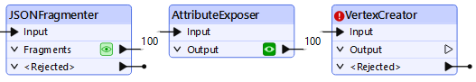
- Double-click the VertexCreator to open its parameters and configure them following the table below.
- You can set a transformer parameter to use feature attributes by clicking the drop-down arrow next to the parameter and selecting the attribute you'd like to use. This means the transformer will use the value of that attribute for each feature it processes.
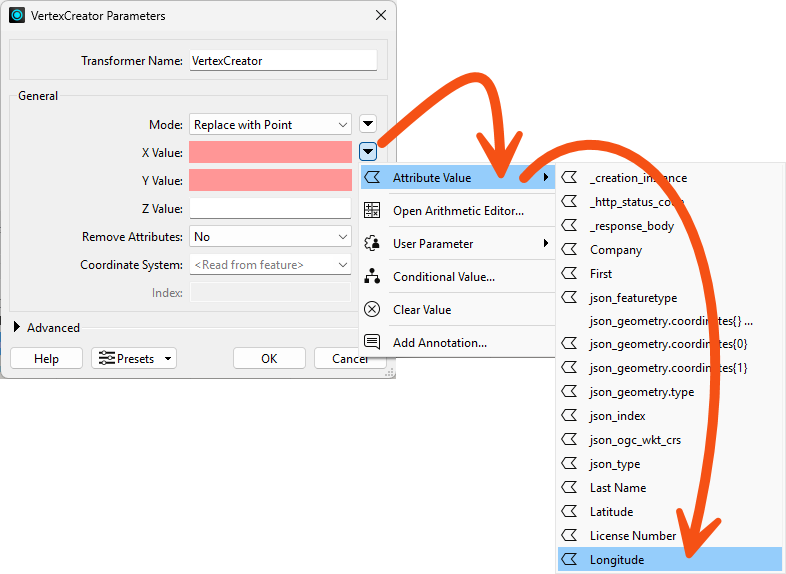
| X Value |
Longitude |
| Y Value |
Latitude |
- Click OK to close the dialog.
3) Identify Coordinate System Problems
- Click the Run button to run the workspace.
- The VertexCreator transformer runs and creates point geometry for the features.
- Inspect the VertexCreator's Output port cache using Data Preview.
- We have a problem: the points are not aligned with the background map. We expect to see the points located in the area around Vancouver, British Columbia, Canada, but they are not there:
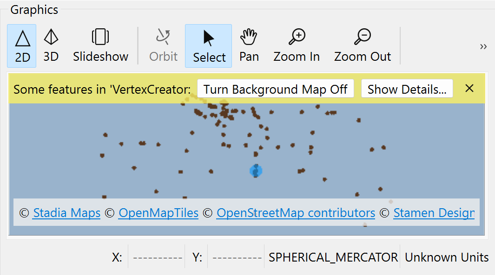
That's because they don't have a coordinate system defined. There are clues we can use to determine this is a coordinate system problem:
- The features do not appear where we expect. We expected to see them near Vancouver, but they are near Null Island.
- The Graphics view has a warning ribbon that informs us, "Some features in 'VertexCreator: Output' may not align with the background map."
- The Graphics view reports the data uses "Unknown Units" at the bottom right.
- The Record Information Window reports that Geometry > Coordinate System is Unknown when a feature is selected.
4) Set Coordinate System
Let's fix this coordinate system problem by setting the coordinate system on our features.
- Open the VertexCreator parameters again.
- Set the Coordinate System to LL84.
- FME automatically reads coordinate systems from spatial data. However, since we created the points from attributes, no coordinate system information is available to read, so we have to define the system manually.
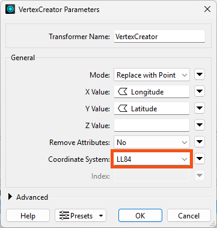
- Click OK.
- Run the workspace.
- Inspect the results of the VertexCreator's Output port.
- You should see 100 point features, correctly located in the Vancouver area.
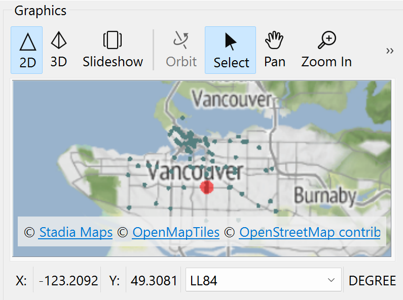
Map tiles © Stadia Maps, © OpenMapTiles, © OpenStreetMap contributors, © Stamen Design
5) Add Geodatabase Writer
Now that our data has the correct attributes and geometry, it's time to write it to a geodatabase.
- Type openfile, and Quick Add opens.
- Filter to Destination objects by clicking the Destination filter button.
- Choose Esri Geodatabase (OpenFile Geodb) [Writer].
- This format does not require an Esri license.
- Make sure you select Esri Geodatabase (OpenFile Geodb) [Writer]. People often accidentally select the Reader here, which is not what we want.
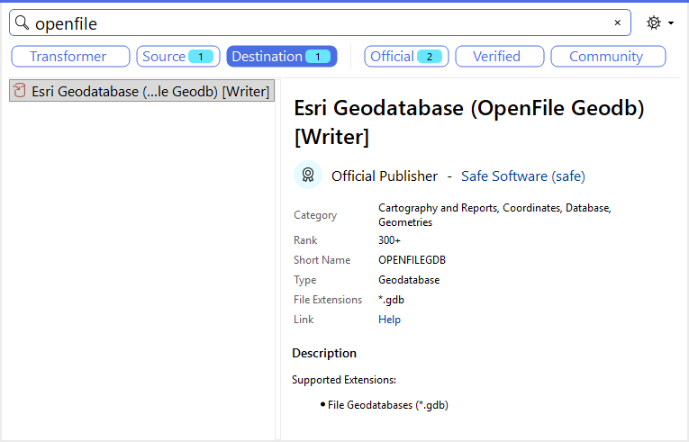
- Once you have selected that format in the Quick Add list, hit Enter or double-click it.
- The Add Writer dialog opens.
- Set the Dataset parameter to C:\FMEData\Output\Training\BusinessOwners.gdb.
- The writer will create this folder if it does not already exist.
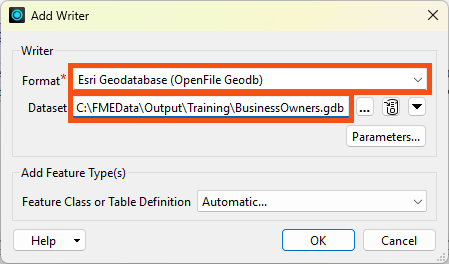
- Click the Parameters button.
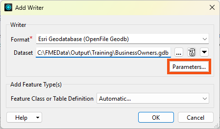
- Enable Overwrite Existing Geodatabase.
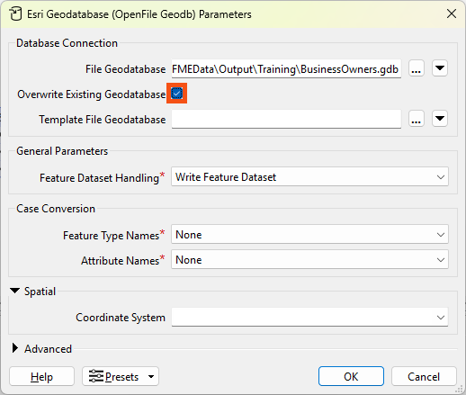
- Click OK to add the writer.
- We'll leave the FeatureClass or Table Definition mode as Automatic, the default. This setting means the writer feature type will adopt the schema of any features connected to it. We'll discuss schema handling more in the coming lessons.
- Set FeatureClass or Table Name to BusinessOwners.
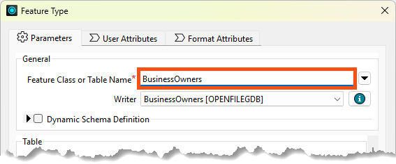
- Click OK to add the writer feature type.
- Connect the VertexCreator's Output port to the new BusinessOwners writer feature type.
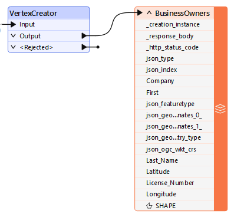
6) Add Bookmarks
To tidy up our workspace, let's add two bookmarks.
- Select all the transformers by clicking and dragging
- Right-clicks one and choose Insert Bookmark.
- Rename it Source Data.
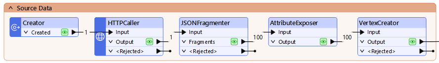
- Click the up-pointing arrow next to Source Data to collapse the bookmark, hiding the work required to read our data.
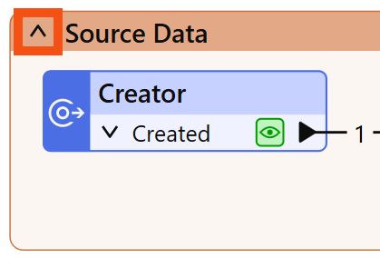
- Adjust the width of the bookmark to take up less space on the canvas by clicking and dragging the edge of the bookmark.
- Right-click the VertexCreator : Output port
- Choose Rename.
- Calls it BusinessOwners JSON.
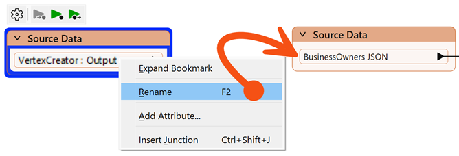
- Add a bookmark (right-click > Insert Bookmark or Ctrl/Cmd+B) around your writer feature type and call it Writer Feature Types:
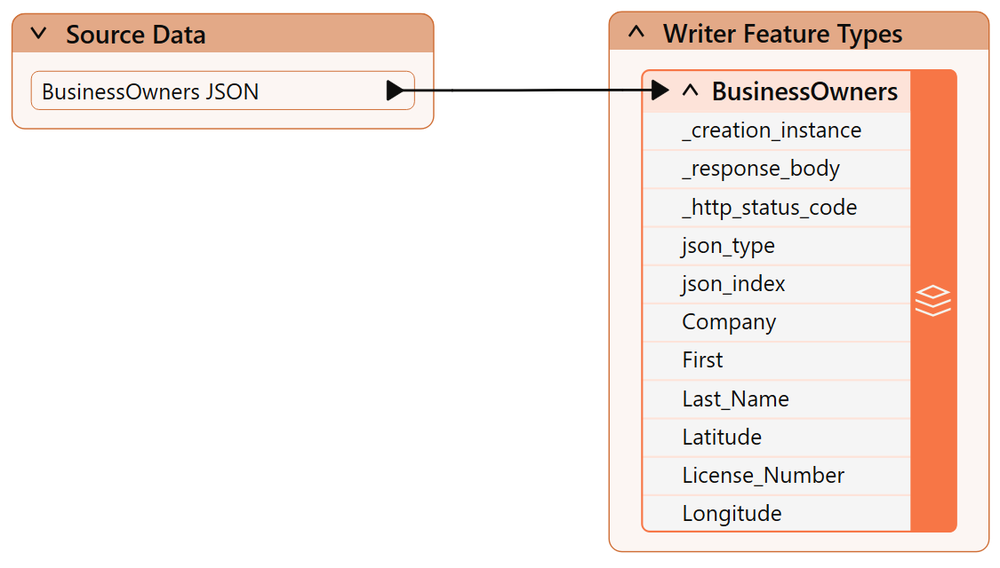
7) Write the Data
- Click Run to run the workspace and convert our data.

- After the workspace has run, the Translation Log reports that the “Translation was Successful.”
- Select the BusinessOwners writer feature type.
- Click Open Containing Folder to confirm the geodatabase has been created.
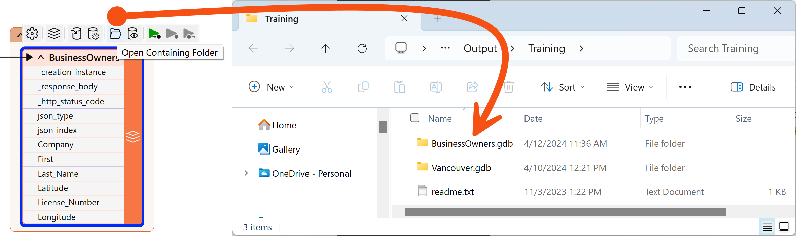
We are off to a good start. We have created a new geodatabase and loaded the JSON business owner data into it. Next, we have to edit the schema.
Leave Us Feedback on This Lesson